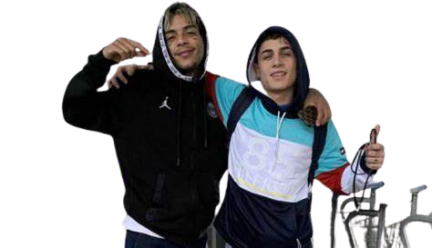

Músicas mais famosas do mc Kevin e do mc Hariel.
Mc Hariel, mais conhecido como Haridade, um sucesso do funk paulista, era melhor amigo do Mc Kevin a muito tempo. Hariel comenta que sente falta do amigo, chegou até a fazer uma homenagem para o eterno parceiro em seu CD.
Mc Hariel, mais conhecido como Haridade, um sucesso do funk paulista, era melhor amigo do Mc Kevin a muito tempo. Hariel comenta que sente falta do amigo, chegou até a fazer uma homenagem para o eterno parceiro em seu CD.
Essa foi a música do álbum "Mundão Girou" que foi feita em homenagem ao Kevin. Na música e em outras diversas vezes, foi explícito que Hariel sente muita falta de seu parceiro, ele também cantou diversas músicas de kevin em seus shows como forma de relembra-lo.
Mc Hariel, foi o príncipe da festa de 16 anos de Ellen Bueno, irmã de Kevin. Ellen e Kevin faziam aniversário juntos, e sempre acabavam comemorando juntos. Quem iria dançar a valsa com a Ellen na sua festa seria o cantor, mas como ele acabou falecendo, não aconteceu.
Em 2022, um ano depois, no seu aniversário de 16 anos, Ellen convidou o melhor amigo do seu irmão, Mc Hariel para dançar a valsa com ela. Ellen comentou em suas redes sociais, que chegou a pensar em desistir de sua festa.
Aparentemente, os fãs amaram ver que o lugar de Kevin foi ocupado por Hariel, muitos disseram ser muito emocionante.